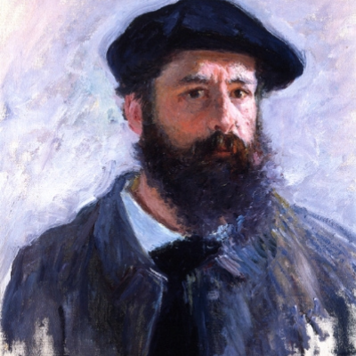
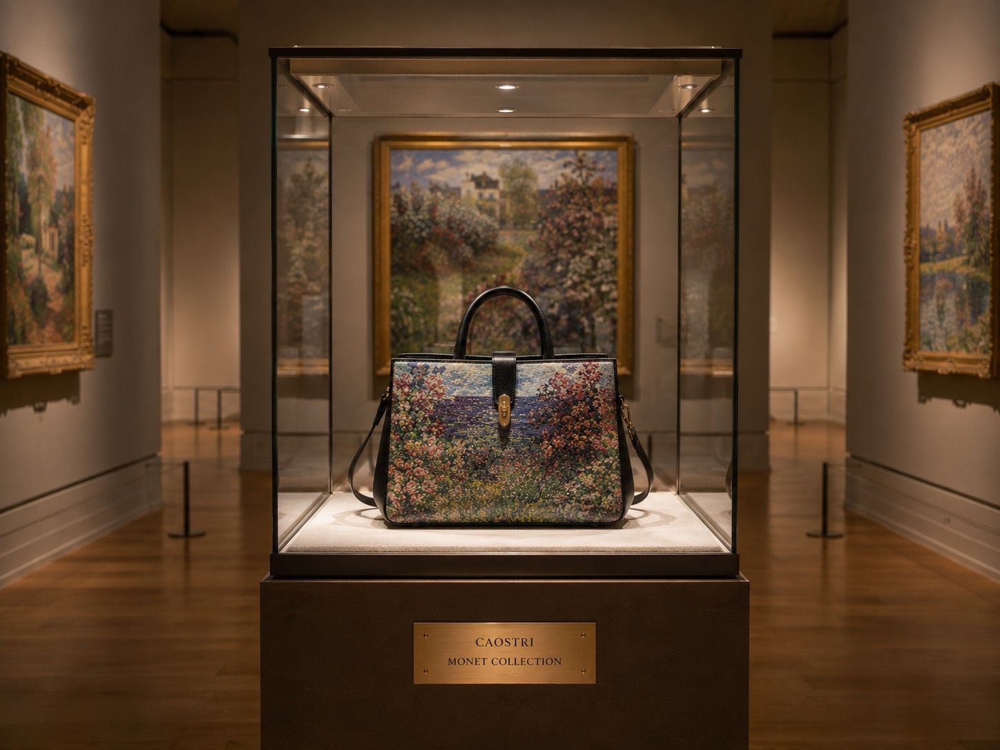
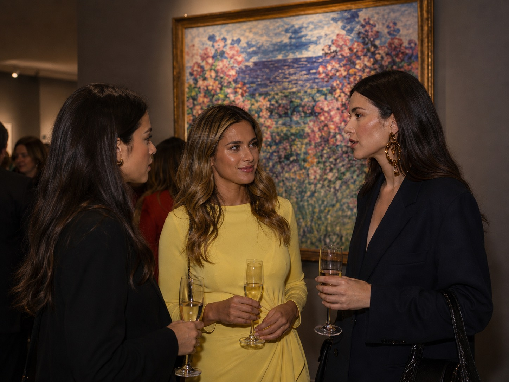
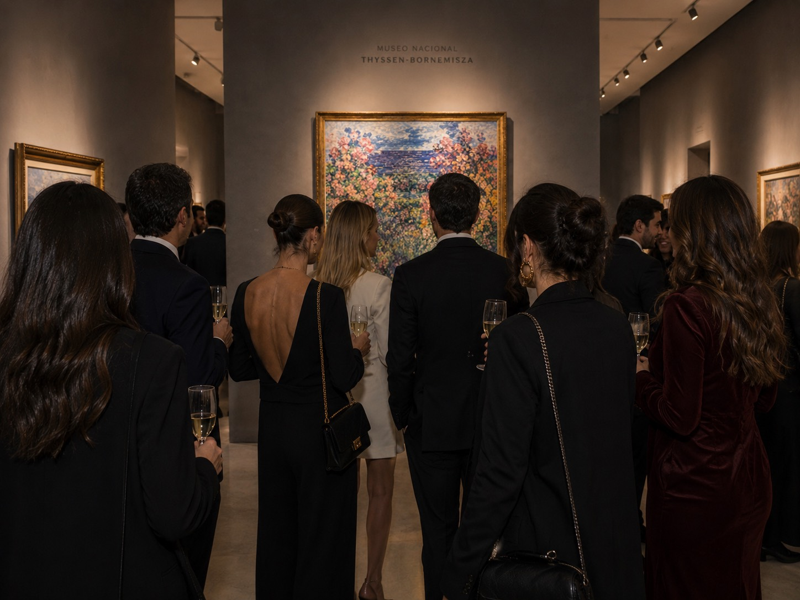
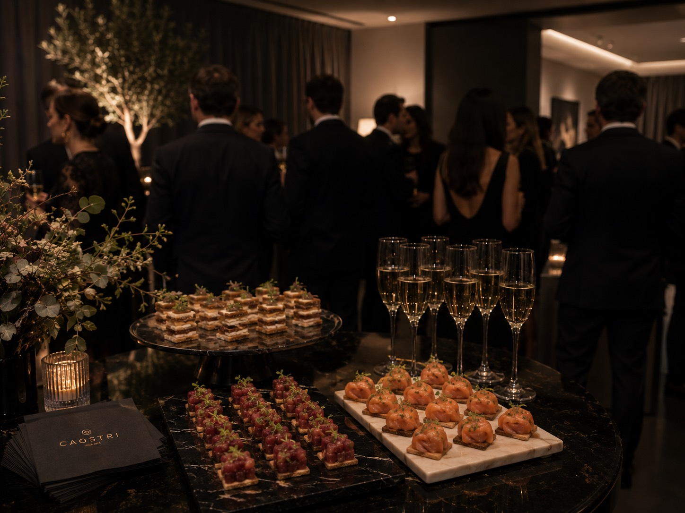
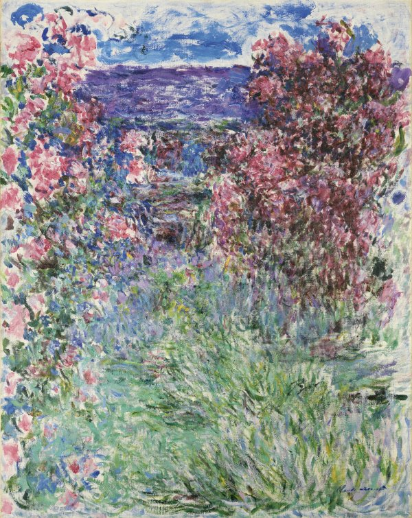

Una pieza creada entre arte y deseo, donde la delicadeza de las rosas se encuentra con la precisión de la marroquinería contemporánea.
4 DE DICIEMBRE DE 2026
Una pieza que no se muestra,
se siente.
Museo Thyssen-Bornemisza
x CAOSTRI




Esta colección rinde homenaje a Claude Monet, a su mirada única y a su forma de transformar la luz en emoción.
Su visión transformó la manera de mirar la naturaleza y convirtió lo cotidiano en eternidad.
